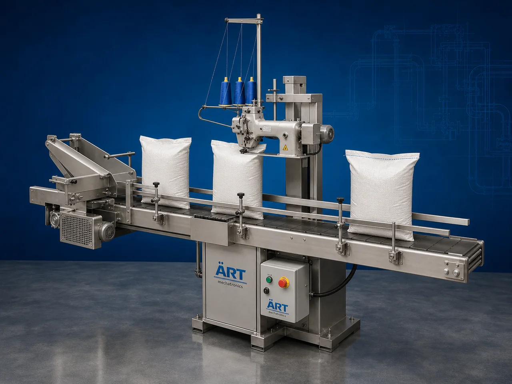

Sack & Bag Stitching Machine (Automatic Bag Stitching & Sack Closing System)
A Sack & Bag Stitching Machine, also known as a Bag Stitching Machine, Sack Stitching Machine, Bag Closing Machine, or Automatic Sack Stitching System, is an advanced industrial packaging solution designed for automatic bag closing, sack stitching, conveyor integration, thread trimming, sealing, and high-speed packaging operations for woven sacks, paper bags, PP bags, fertilizer bags, grain sacks, flour bags, and industrial bulk packaging applications.

About the Sack & Bag Stitching Machine
Sack and bag stitching systems are widely used for:
- Grain sack stitching
- Flour bag closing
- Cement bag stitching
- Chemical bag sealing
- Fertilizer sack stitching
- Feed bag closing
- Bulk packaging operations
- Export-ready sack packaging
The machine improves:
- Packaging strength
- Bag sealing quality
- Packaging speed
- Product safety
- Labor productivity
- Packaging consistency
- Dispatch efficiency
Industrial sack & bag stitching machines use:
- High-speed stitching heads
- Servo synchronized conveyor systems
- PLC and HMI automation controls
- Automatic thread cutting mechanisms
- Integrated bag handling systems
to automatically stitch and seal sacks and bags with superior sealing strength and high production efficiency.
Sack & bag stitching machines are widely used in industries such as:
Flour industries Rice industries Chemical industries Fertilizer industries Cement industries Animal feed industries Agriculture industries Construction material industries
where secure bulk packaging and strong bag sealing are essential.
The machine is highly suitable for:
- Flour sack stitching
- Grain bag closing
- Cement bag sealing
- Chemical sack stitching
- Fertilizer bag sealing
- Feed bag stitching
- Bulk material sack packaging
ART Mechatronics offers high-performance sack & bag stitching machines, engineered for continuous industrial operation, strong stitching performance, durable construction, and reliable long-term packaging automation.
Working Principle of Sack & Bag Stitching Machine
- 1. Filled Sack / Bag Feeding Filled sacks or bags are manually or automatically transferred onto conveyor section.
- 2. Bag Positioning Process Machine automatically aligns and positions sacks for accurate stitching operations.
Servo synchronization ensures smooth conveyor movement and precise bag handling.
- 3. Sack & Bag Stitching Operation Machine handles: ✔ PP woven sacks ✔ Paper bags ✔ Flour bags ✔ Grain sacks ✔ Fertilizer bags ✔ Cement bags ✔ Feed bags
accurately and continuously.
- 4. Thread Cutting & Bag Closing Process Machine performs: High-speed stitching Automatic thread trimming Leak-proof bag closing Crepe tape integration (optional)
for secure transportation and storage packaging quality.
- 5. Conveyor & Dispatch Integration Finished stitched bags transferred automatically through: Bag conveyors Check weighers Metal detectors Palletizing systems
- 6. Finished Bag Discharge Finished stitched bags discharged automatically for: Warehouse storage Truck loading Dispatch operations Export shipment handling
Types of Sack & Bag Stitching Machines
- 1. Portable Bag Stitching Machine Designed for: ✔ Mobile and flexible sack stitching applications
- 2. Automatic Bag Stitching Machine Suitable for: ✔ High-speed industrial sack closing systems
- 3. Conveyorized Sack Stitching Machine Uses: ✔ Continuous industrial bag packaging lines
- 4. Heavy Duty Sack Stitching Machine Designed for: ✔ Bulk material and industrial packaging systems
- 5. Servo Driven Bag Stitching Machine Suitable for: ✔ Precision high-speed bag stitching operations
- 6. Fully Automatic Sack Closing System Designed for: ✔ Complete industrial bagging automation lines
Industries Using Sack & Bag Stitching Machines
🌾 Grain & Flour Industry Rice, wheat, flour, pulses, and cereal sack stitching systems. ⚗️ Chemical Industry Chemical powder, granules, pigments, and industrial material bag stitching systems. 🏗️ Cement & Construction Industry Cement, mortar, gypsum, fly ash, and construction material bag closing systems. 🌱 Fertilizer Industry Fertilizer granule and agricultural product bag sealing systems. 🐄 Animal Feed Industry Cattle feed, poultry feed, fish feed, and animal nutrition sack stitching systems. 🍃 Agriculture Industry Seed bags and agricultural bulk packaging stitching systems.
Features & Advantages
- High-speed automatic sack and bag stitching operation
- Strong and secure bag sealing quality
- Smooth conveyorized bag handling systems
- PLC and servo automation control systems
- Improves dispatch and warehouse efficiency
- Reduces labor dependency and packaging leakage
- Supports multiple sack and bag sizes
- Reliable long-term industrial performance
- Continuous industrial packaging operation
Technical Highlights
Machine Type: Automatic sack stitching machine Industrial bag stitching machine Bag closing system Packaging Material: PP woven sacks Paper bags Valve bags Bulk packaging bags Features: PLC control system Servo synchronization Touchscreen HMI Automatic thread trimming Conveyor integration Closing Type: Thread stitching Crepe tape stitching Leak-proof bag closing Applications: Flour Grains Cement Chemicals Fertilizers Animal feed Automation: Semi-automatic Fully automatic industrial systems
Turnkey Sack & Bag Stitching Solutions
ART Mechatronics offers: Complete sack stitching systems Automatic bag closing solutions Packaging automation integration systems Conveyor synchronization systems Installation & commissioning After-sales service & AMC
Why Choose Art Mechatronics
Expertise in industrial packaging and automation systems Customized sack and bag stitching solutions for multiple industries High-performance and durable stitching technology Advanced PLC and servo automation systems Proven industrial packaging performance across sectors
Applications
Flour Mills Rice Processing Plants Chemical Industries Fertilizer Manufacturing Units Cement Manufacturing Plants Animal Feed Industries
Get pricing & specs for the Sack & Bag Stitching Machine
Share the product, target capacity, current process and plant location. These details help our engineers discuss the right machine or line configuration.
One partner, from design to start-up
ART Mechatronics designs, manufactures, installs and commissions your Sack & Bag Stitching Machine solution with regional presence in India, UAE and Thailand.